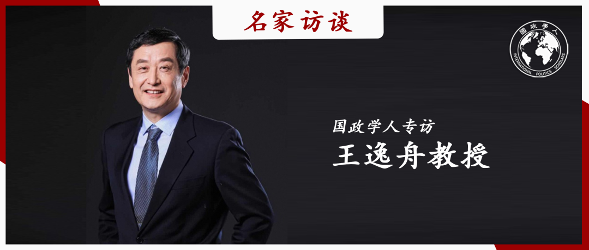
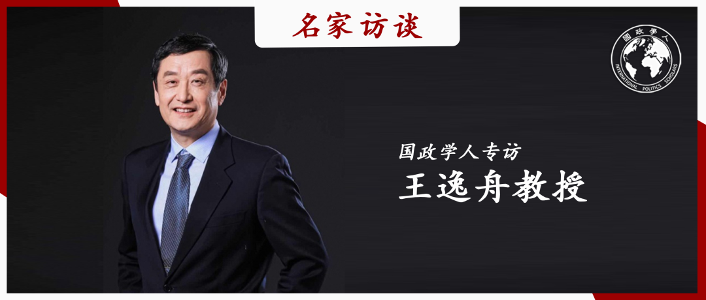
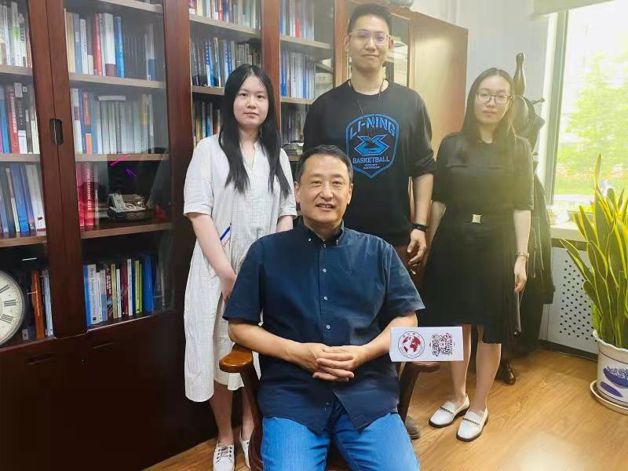

收录于合集 #名家访谈 6个
 

编者按
** 国政学人 新一期“ 名家访谈” 重磅发布：国政学人专访北京大学 王逸舟 教授。**王逸舟教授是中国国际关系学界的领军学者。王教授就其学术经历、学科评论、外交批评及青年寄语等话题与我们分享了他的感悟、观点和期许。通过王逸舟教授的话语间，我们能看到一位严谨治学的儒雅学者，他主张“真善美”的三位一体思路；我们看到一位永不止步的学术跑者，他强调国际关系研究光谱要更加多层次、多元化；我们看到一位语重心长的和蔼长者，他激励后辈们勇于竞争，且不怕竞争。在此，由衷感谢王逸舟教授对国政学人的支持！
“国政学人·名家专访”第五期
国政学人专访王逸舟教授
王逸舟
嘉宾：
王逸舟 ：北京大学博雅特聘教授、《国际政治研究》杂志主编、中国国际关系学会副会长。1957年出生在武汉市。1975年高中毕业后，在湖北省钟祥县长滩公社知青农场劳动两年。国家恢复高考制度后于1977年底考入湖北大学（原武汉师范学院），1982年考入中国社会科学院研究生院，先后获得法学学士、硕士、博士学位。1988年至2009年在中国社会科学院工作。曾任中国社会科学院马列研究所当代研究室副主任，中国社会科学院世界经济与政治研究所国际政治研究室主任、副所长、研究员，《世界经济与政治》杂志主编，中国社会科学院研究生院世界经济与政治研究系主任、教授、博士生导师。目前兼任外交学院、中国人民大学、公安大学、中国传媒大学、浙江大学等十数所院校的客座教授或研究员，以及国内外十几家学术刊物的编委。近年来主持完成多个重大科研项目。迄今为止，到过50多个国家及地区开会、讲学和参观。
采访：
严展宇： 国政学人特约记者，北京大学国际关系学院2018级博士生；
施 榕 ： 国政学人特约记者，北京大学国际关系学院2018级博士生；
杨紫茵： 国政学人特约记者，北京大学国际关系学院2020级博士生。
第一部分： 学术历程
国政学人 ：您的学术生涯经历了比较明显的两次转向，第一次是从苏联东欧研究转向国际关系理论研究，第二次是从理论研究转向了中国外交研究。是什么促成了这两次转向？在这三个不同阶段的研究中，您的研究重心分别是什么？
王逸舟教授 ：第一次转向是不得已的，在上世纪80年代前期国内学术界有一股“苏东热”，因为我们觉得苏东国家也是社会主义体制，和我们比较相像，比如都是从计划经济转向商品经济、都是共产党领导。我们希望从对它们的研究中借鉴一些改革的经验，来完善和提升自身的体制。那个时候的研究重点是苏东国家社会主义体制与中国社会主义体制的异同。所以那个时候，我博士阶段的研究就是在社科院马列所跟着苏绍智老师做苏联东欧社会主义体制的比较研究。我写的第一个系列的小书叫“东欧三部曲”：从《匈牙利道路》到《波兰危机》，再到《南斯拉夫实验》，都是基于体制转型研究的作品。当然它们各有特色，比如匈牙利是静悄悄的革命，相对比较成熟，波兰是比较紧张的，社会危机比较多，南斯拉夫很激进但是大起大落。在这三本书中，我把这三种模式做了一些归纳和比较，算是这一阶段的成果。
自1989年以后，整个中国学术界处于冰冻期，苏联东欧研究基本上不能做了，对西方理论的引介也基本停滞了，而且当时所在的研究单位也处在一种比较紧张的氛围之中。这些都让我产生了一种学术上的绝望感，觉得这个道路走不下去了，所以我就被迫从社科院马列所转到了世界经济与政治研究所，开始转向国际关系理论研究。我相信如果没有那个特殊的历史事件，我可能会一辈子做苏联东欧研究，因为我挺喜欢这个方向的。
大概从九十年代初到新世纪开始十年左右的这个阶段，我翻译了很多西方政治学的基础理论著作，引介了很多国际关系理论流派。1995年到1997年的那段时间是我提升很快的一段时期，一个重要原因是我去了哈佛大学进行访学，见到了许多国际关系研究领域的学者，突然感觉打开了另外一扇窗口。我的性格是比较喜欢探索新事物的，这段哈佛的经历也让我的学术认识从一元论转向了多元论，因为我发现任何一种理论学派都不具备什么绝对的真理性，都有它们各自的局限。所以这个时候主要的工作是引介西方的国际关系理论，现在看来，也是这一时期相对比较早和比较全面的对于西方国际关系学的介绍。
第二次转向是主动和自觉的，一个原因就是我虽然很喜欢这些国际关系理论，但是在引介这些理论时就发现，它们和中国的实践虽然有联系但是不能完全对接。尤其是新世纪之后中国明显出现了一个井喷式的向上发展趋势，在这个时期社会明显开始有弹性了，思想开始多元化了，研究开始出现更大的自主性和创新欲望。所以到了零几年的时候，我就开始了新的尝试。
那个时期写的第一本书叫《全球政治与中国外交》，其实我自己更喜欢相互依存学派、建构主义理论等，对传统现实主义和权力政治等不太喜欢，不过我早期对理论的译介尽可能做到均衡。不过当时的全球化理论、主权理论、后实证主义理论给我的研究打开了一个个小的窗口，让我看到除了权力政治学说以外，还有其他各种各样的理论，这对我后来近20年的中国外交研究起到了很大的促进作用。尽管它们不能完全拿来直接使用，但是我意识到理论越多样越丰富，就越容易落地，越容易与中国的现实对接，越能解决很多具体的问题。当然，理论和现实之间的差异需要学者去认真反思，对不同的理论需要进行创造性的转化和吸收。总得来说，这次转向中国外交研究更多是想把自己的所思所想接地，贴近中国的实践。
在这一阶段关于中国外交研究中，前期是关于中国外交的实践发展、中国外交的特色、代际更迭，当下外交能力建设的挑战和障碍，为具体政府部门提供建议，发展出中国特色的口号等。下一步的研究其实是前期研究的思想基础和方法基础，比如我想从艺术和知识社会学的视角等探求国际关系学作为一门社会科学的多种可能性，拓宽国际关系的研究议程。同时借鉴生态位学说、量子思想等探求横向意义上不同学科之间的联络，以及纵向意义上同一学科的代际传承关系。目前这一研究处于起步阶段，还谈不上什么贡献。
坦率的说，研究中国外交比研究中国政治相对容易一些，研究中国政治的约束更多。我觉得如果真的让学者放开研究中国政治，他们很快就会发现单纯照搬西方的学说是行不通的。但是不让他们研究就可能造成这种情况：一方面人们好奇，想窥视外面的东西，另一方面又不知道如何转化和创新超越。当然我不是要批评现在的管理者，而是我觉得在研究层面我们要继续解放思想，进一步释放学术活力。
国政学人 ：您现在正在进行为期五年的国家重大课题《新时代中国外交能力建设》，在完成这个课题之后，您还有第三次转向的计划吗？
**
** 王逸舟教授
：其实现在已经开始尝试做跟原来不同的、比较基础性的、更多在于知识本身的拓展。我希望把关于外交、关于国际关系研究的知识议程变得更有弹性，发掘知识光谱上更多的色彩。
现在的研究更多是想如何用知识社会学来剖析国际关系学和外交知识的进阶之路。它比较基础性，针对的不是当下的政策问题，而是研究当前的外交形态是怎么样的、主权会朝什么样的方向演化、学术理论的知识是怎么构造的、来源有哪些不同、我们的学术进阶之路是单纯的器物层面的递增，还是其他方面比如命题的变化、范式的更迭、方法的多元等。研究的目标是把我们相对较窄的领地变成更开放的议程，更加充满活力的进程。比如分析不同时代的理论有什么特点，它们在哪个层面可以称为知识进步，还只是低水平的重复？用什么样的概念去界定、描述具体问题？
国政学人 ：您提到您现在的一个学术兴趣是国际关系研究的新方法、新视角、新增长点，是什么原因促使您思考这个问题，您所期待的“新的”国际关系研究是什么样子的？
王逸舟教授 ：我觉得“新的”国际关系研究一定是带有某种交叉性质的、多种学科融合的开放研究，比如说它对于自然科学、对于艺术、对于像信息化等有着吸纳的态度。“新”的重点不在于具象的问题，而是在于研究的心态、角度和工具（比如大数据）。我们追求新的目的不是简单地重复以往教科书式的东西，而是用新的跨领域的方法使旧概念、旧命题焕发新的生机。比如说主权概念的演进、外交形态的变迁。这种视角不是对以往知识的抛弃，而是打开了多个小的窗口，通过这些窗口看到了不一样的世界和色彩。
我举几个具体的例子，比如研究中国外交时，我们可以更多从实践出发，从中国崛起的历史中寻找知识。中国社会之大、地域之广在世界上是少有的，而且中国不同方向改革是很有特色的，现在我关于中国外交的课题有意区分了中央外交和地方外事，看一看中国不同地域对外交往的实际操作层面和思想文化有什么差别。因为中国外交必然是呈现金字塔式的，一定是有中心和边缘之分的，一定是让几十个不同的民族都有参与感、都有自己的贡献。
比如像我们学院的博士生金磊关注少数民族视角的国际关系理论，他呼吁重视少数民族的神话与史诗及其背后的世界观，重视少数民族的迁徙与生存，重视多文明构成的多样性，强调实地考察与资料整理的重要性，包括收集少数民族自身的历史记录，标定史籍、口传史等少数民族文化的特有脉络，重视作为原始社会契约的少数民族习惯法，重视"地缘"、“边界"等概念的生成。还有已故的国际关系青年学者庄礼伟提出的国际关系理论的"草根视角”、“亚非视角”、“南方视角"也给了我很大的启发。他提出现在国际问题研究领域的很多文字看似高大上但不接地气。他多年来有意接触在广东打拼的农民工和弱势群体，放眼观察东南亚地区少数族群的生存状态，用专栏和随笔讲述弱势人群和"他者"故事，我们可以感受到与主流媒体及学界呈现的不一样世界。还有我和我的博士生严展宇合作的小书《迷人的国际关系》，从科学、人文和艺术三个维度讨论国际关系、外交学知识的发展进路，尤其是严展宇对艺术有着自己独特的见解，这种灵动的、有想象力的、创造性的思考也是我们需要的“新的”研究。
将来的中国外交学和国际关系学怎么发展成一个更有弹性的学科，这在思想层面要求我们下一步的研究光谱要更加多层次、多元化，命题要充满想象力。这方面年轻人的作品对我启发很大，当然也不乏一些大思想家，比如我最近在阅读福柯、舍勒、罗素等，我觉得其中有很多可以值得深挖的地方。比如知识社会学创始人、哲学家舍勒认为，知识的创造者或载体不仅有知识分子的工作，也不只是成文的东西。知识的分类多种多样，因而创造与获取各不相同，比如有自然观察获得的知识（日月星辰），有精英引导灌输的知识（党纲政纲），有悲愤产生的知识（抗议目标），有教育及社会制度产生的知识（课程教材），以及专业培训习得的知识（政治主权）等。原始部落的人与纽约大都会的人形成不同环境的不同知识，北极爱斯基摩人对于白色的辨识、和渔民对于蓝色的感觉和木匠对于木质的辨别均远远高出常人。有些知识是直觉式的，有些是遗传的天赋，还有些属于复合知识。知识分子的观点与创作来源于包含各种冲突看法的媒介，杰出而敏感的知识分子能根据社会需要审慎梳理，带动社会与民族的思想进步。知识分子的整合工作不是各种群体已有意见的算术平均数，而是以知识创造的方式维护和利用积累下来的文化成果和社会能量。
国政学人 ：您曾经说过“一个学者的思想史就是他的阅读史”，您的阅读史是怎样的？对您影响比较大的学者有哪些？您有没有推荐的书目？
王逸舟 ：其实我的阅读内容比较杂，没有特别的偏好。早期研究苏联东欧时喜欢卢卡奇、南斯拉夫实践派哲学家、波兰经济学家兰格等，他们的作品反映出那个时代比较先锋的改革思想。其中我特别喜欢卢卡奇，他的思想很有创造性，在当时我们的体制下很难产生这种思想的巨人。我对他印象最深的一句话是“共产主义在东欧失败的原因在于理论和实践的脱节”，这对我后来研究中国外交影响很大。研究国际关系理论时，我阅读了不少西方主流（特别是美国）的国际关系理论思想，特别是对它边缘分支的理论很感兴趣。我注意到西方学界有个比较值得我们借鉴的地方，就是除了主导的理论流派之外，还会出现其他分支，它的学术层次比较丰富。所以，这一时期的阅读并不拘泥于现实主义的作品，我比较喜欢自由制度主义，后来去了美国又喜欢上了后实证主义。
说到推荐的书，一时间我想到的是米歇尔·沃尔德罗的《复杂》，它对科学体系的发展作了深入浅出、趣味十足的描述，这对我们理解世界的多样性和复杂性，以及看待一个学科发展的脉络来说，都有着不错的启示。总的来说，读书要避免只看老师规定的教科书，我也没有单一固定的推荐书目，这个还是根据个人的兴趣来。只不过我希望读书涉及的领域是交叉的，便于我们立足于学科的交叉点上去创新。
王逸舟教授
第二部分： 学科评论
国政学人 ：在《迷人的国际关系》开篇，您细数了当前国际关系研究的诸多不足之处，在您看来造成这些“症状”的根源是什么？您认为有没有合适的“处方”？
王逸舟教授 ：我在《外交知识刍议》中也提到了一些现象，比如通过梳理 2019～2021 这三年国家社会科学基金项目国际问题研究领域《指南》下面的 263 个课题，可以发现占比近一半（49%）的《指南》课题，与高层政治和中央外交方略直接挂钩。就国别地区而言，直接和间接与美国研究相关的选题占有很大比重，中国周边国家和次区域亦有相当数量。现实性的、中短期的和政策层面的题目占据绝大多数，当下的热点话题高居前列（个别内容可能很快失去热度和研究价值），而具有长期性、基础性和学理性的选题很少，与外交研究本身（“理论的理论”）和外交学术增长（知识社会学意义上）相关的题目几乎见不到。
总的来说，目前国际关系研究重复度太高、而且很多是中低水平的重复、资源被大量集中和浪费，有些主题乏味无趣，甚至导致年轻的研究者内卷，一直在做重复性劳动。提到内卷，这是现在很流行的词，很多人把它和年轻人之间的竞争放在一起来说，其实我是反对这样的理解的。我认为年轻人应当去竞争，而且年轻人是不怕竞争的，但是如果竞争导致普遍的平庸，那么这就是一个大问题。竞争的结果应当是越来越好的，结果应该是对胜出者的奖励和对失败者的鼓励，而不是带来低效和重复，让参加竞争的人都看不到希望。年轻人感到绝望，自然会选择“佛系”、选择“躺平”，研究的品味、创造力和想象力自然也就被消磨掉了。
至于你提到的“处方”，我也只是一些简单的思考和建议，就是无论是国际关系研究还是外交研究，要注重“真善美”的三位一体思路。“真"是指以科学态度推进对真理的探究，懂得不受干扰地看待具体外交政策与大的国家利益和时代变迁的关系。“善"是指培养人的国际情怀与本土视野，防止狭隘偏颇的东西占满心胸。“美"则指生发研究者及分析过程的想象力和灵动性，有艺术般的展示和美感。这是从理论上来说的三位一体，从实践上来说，它有利于培育风范大国国民性，让人以健康心态对待外交领域的特殊知识，如那些无法证实的知识（各种"阴谋论”），那些无法在现实中感受的知识（如"天堂的存在"或"外星人现身”），那些需要经常修正的知识（如各国大选选情预测），那些模棱两可的知识（如地区冲突形势"亦喜亦忧"之类），那些由个人体验和抽象灌输反差造成的知识（如战争造成悲伤的感受，国家间关系"最好"或"最糟"的表态），那些表层阅读和深层阅读带来差异的知识（ 如有关"酷刑”、“种族隔离”、“后殖民时代”），学会辨识国际关系视域下的"感悟”、“审美”、“向善”、“人性”、“艺术"和"崇高”。总之，让外交学和国际关系研究聚焦"大写的人"。
国政学人 ：我注意到《国际政治研究》开启了一系列国内专家学者的专访，内容之细致、领域之明确，足以作为某一研究领域的前沿文献综述来使用。您是出于什么样的契机组织这样的访谈呢？您还计划邀请哪些领域的学者？有没有考虑来自其他学科，但是对国际关系研究有所涉及的学者参与？
王逸舟教授 ：早在我做《世界经济与政治》主编的时候，我就策划了十余篇国际关系学者的名家专访，但这个主要是个人学术史，注重学者的个人学术经历，邀请他们分享自己研究的偏好和主题。而现在《国际政治研究》主要针对的是不同领域的中青年学者，而且关注点不再是他们自身，而是由他们来全面归纳自己研究领域的进展以及未来的研究方向。聚焦的不再是个人，而是一个领域，一个房间。虽然可能不完善，但是能打开更多的窗口，让人从欣赏的角度去看国际关系研究有哪些能突破的发现。这一系列的专访转载率很高，后来又分别集结出版了《国关十人谈》，算是为学术界的知识总结做了一些微薄的积累性工作。
至于今后的专访计划，其实我和编辑部也在思考。我在想，在现有这些不同领域的专访告一段落之后，我们不妨换一个视角，看看由国外的同行来概括中国在国际关系、外交领域研究的情况，会与中国同行所做的概括有什么样的不同？不过如何挑选外国学者会比较困难，目前还集中在国内学者的范围。
国政学人 ：您可能是最早的国际关系中国学派理论的创导者。我们或许看到，多数中国国际关系学者更多的是以一种和谐和进化的视角来解释国际政治，以展示他们与西方国际关系理论的不同。但是我们现在又看到，中国与美国等西方国家之间的冲突正在变得越来越激烈，这也是一个事实。您认为我们中国学派怎样做才能够真实的反映客观事实的变化呢？
王逸舟教授 ：上世纪90年代，梁守德老师最先提出建设中国特色的国际关系理论，那个时候我参与了部分的讨论，当时我有个看法是这种理论应该是顺其自然、水到渠成、瓜熟蒂落的事，但是目前却多多少少有种催熟和拔苗助长的趋势，这可能会导致基础不牢和主题单调。
中国学派应该和中国的国情、土壤、正在变革中的内政外交结合起来，包含这一过程中的温情和痛苦。目前中国内部若隐若现的三个世界：沿海、中部、西部落后地区，这既是前一段改革的产物，同时也导致了理论研究上的层次和落差，这中差异需要被概括出来。研究者不仅需要宣扬中国的伟业，也需要关注这种动态的格局和动感。目前地方官员在外事活动中还比较拘谨，这一点可以借鉴时任上海市委书记汪道涵的做法，大力鼓励地方官员在外交方面发挥创造性。中国地域范围广大，怎么挖掘中国外交知识的不同分类，探索地方实操层面的外交做法，怎么从国际关系理论的角度分层次、分地域总结这些经验，是目前我的研究重点所在。总而言之，不论对中国学派的发展采取什么样的态度，知识的产生都应该立足实践，立足多样化的现实。
严展宇 ：对于国际关系的教学来说，我曾经两度担任您课程的助教，了解一些您的教学思路。还是希望您细致地谈一谈，您期待的国际关系教学是什么样子的，比如课程的设置，考核的方式，老师和学生之间的关系，最终的教学目标。
王逸舟教授 ：这个方面我的发言权不太足，我从社科院来北大也才短短的十多年。过去我在社科院呆了二十多年做研究，来到北大后我有点脱胎换骨的感觉，因为我发现学生是学术生命的一部分，教学和科研同样重要。坦白来说，当时我在社科院带学生更多是学徒式的，带学生做课题，没有系统的教材，也没有特定的教学计划和课程大纲，学生的反馈也不及时。
而北大是比较规范的，不管你的科研能力怎么样，教学首先是教师的首要任务，对学生一定要认真。其次，一个好的研究人员让自己保持青春的方法就是教学相长，我来北大之后跟年轻人交流后焕发了更多的学术活力，不断更新着自己的知识结构。对教学看重这一点我在哈佛大学访学时也有类似的体验，在哈佛只要是好教授都特别重视教学，而且国外学生的发言权很大，老师的学术生命很大程度上是由学生决定的。
对于师生关系来说，我觉得学生应该是生机勃勃的，而老师更多是一个引导者、知识传递者的角色，而不是像老板和员工的关系。北大这点做得比较好，它的科研和教学是相辅相成、相互激励的，一个好的科研人员应当也是一个好的教师，而一个好的教师也应该能够去不断更新自己的知识结构，这种更新不仅仅是来源于课本，更来源于自己所带的团队。我算了下我一共带了四、五十个博士，很多博士都在某些领域超越了我，或者弥补了我曾经留下的遗憾，这比我自己写一本书能带来更大的喜悦和收获。
 采访者与王老师合影
第三部分：外交批评
国政学人 ：在您关于中国外交的研究中，您觉得哪些关键词能最好地概括您的观点？您的基本思考点和基本态度有没有发生过变化？
王逸舟教授 ：我觉得一以贯之的关键词是“平常心”，就是既不仰视也不俯视，既不亢奋也不自卑。过去我们仰视苏联，改革开放以后我们曾经仰视西方，迷信他们的主流理论。现在又觉得自己很厉害，不管是在器物层面还是在思想层面都觉得我们不需要向别人学习了，能搞出一套自己的东西，而且要向全球输出。比如我们到了欧洲，看到它们的车站没有我们的大，地铁没有我们的新，电子支付没有我们这样便利，我们就萌生了虚娇之气，觉得西方不行了，不需要我们学习了。要知道成为“大国”与成为“强国”是两回事，我们正处在“大而不强”、“将强未强”的路上，我们也许看着块头很大，但是在很多领域未必强、未必精。我们也许是许多单个项目的金牌选手，但不是综合能力的第一名。说到底，即便我们已经成为了大国，但我们仍然需要学习如何做一个强国。到了我这个年纪，我觉得怎么样保持一个平常心，说起来容易，但是在学术上是不太容易的。
国政学人 ：在您主持的课题《新时代中国外交能力建设》中，您都关注的大多是当下的议题，您对未来的外交，比如20年30年后的外交，有什么样的想象？
王逸舟教授 ：我觉得现在中国处于一个十字路口，所谓十字路口，就是指有机会变得更好、更进步、更有创造性活力，这在实践上就意味着能创造性地积极介入全球事务。如果按照我们所期待的方向前进，那中国一定是一个“仁智大国”，它具有实力，对外充满智慧，对内社会充满仁义，要求中国在内政外交领域做出改革。朝这个方向走的话，在实践层面上中国在全球各领域中的形象将更多元，与其他国家的互动更良性。在理论层面上，往好的方面走则是美人之美、各美其美。未来中国不仅会和与自己有矛盾的大国“美美与共”，也会欣赏小国的“美”，对弱者、对边缘族群“各美其美”。
当然我说的十字路口还有另一层含义，我希望不要发生这样的不幸，就是十年、二十年之后回望现在，发现中国这一阶段走得不尽如人意：中国的经济变得停滞，社会变得沉闷，内部的分化差距加大，政府官僚主义严重，思想学术禁锢加深。在外交上，中国成为继美国之后的下一个帝国，国内好战的声浪越来越高，国内的年轻人越来越自负，盲目秀肌肉的欲望越来越强。
从学术理论上来看，我们对上面这两种可能性都要有评估。就像我前面说的，我们所研究的国际关系理论、中国特色外交思想在内政上要看到不同的温差、看到不同内部的张力，外交上也是要看到机遇和挑战。不要把中国发展的未来只归咎于某一种原因，要保持更加宽容的、更加多元的态度。不要被带节奏，变成另外一个美国，但愿这样的不幸不会发生。
我们对未来的发展要保持忧患意识和谦虚态度，就正如罗素所说的，真正好的知识分子一定要知道自己不知道什么。研究知识的人要告诉自己、公众和决策者，我们对大千世界还有很多的不了解，有很多知识还是狭隘的、有偏见的、受意识形态蒙蔽的，所以在这种情况下，中国要做一个谦虚的大国，做一个开放的大国，做一个拥有平和心的大国，做一个仁智大国。
国政学人 ：可以看到您对当前中国外交的实践和理论存在诸多批评之声，在面对现实政治和学术良心的双重压力下，您觉得学者应当如何自处？或者说，在您看来从事外交批评的方法和策略是什么？
王逸舟教授 ：避免过度的政治化或者防止不必要的敏感性，是一个很现实的问题。关于政治敏感性，我做过一个有趣的调研。我在北大自己的课堂上，找了三十几个国家的本科生、硕士生和博士生，问他（她）们一个问题：“你们的国家有没有政治约束，有没有政治禁忌？有没有对于你的国关理论或者外交研究来说不许逾越的界限？”结果是，几乎所有这些同学的国家都有特殊的禁忌和雷区。这点给我一个启示：任何地方都有政治敏感问题，关键是如何呈现，怎样研究它们。技巧到了，能力够了，也许就可以用学术的方式、学理的讨论，把它们展现出来，或者持续加以比照和分析。比方说，在美国种族差异就是一个雷区，到英国、日本说君主制便是敏感话题，和土耳其学者讨论上世纪初期的族群残杀容易自找麻烦，在我们周边的多数国家都有敏感但值得研究的历史问题、种族问题、政治斗争问题、边界争端问题，虽然外交官政治人物和官方媒体不会涉及它们，里面充满不同角度的史料记叙和正式非正式标签，有大历史与小人物的各种奇妙组合与悲欢离合。这些东西有些成为政治规则，有些已经内化成为了文化。研究起来，既有难度也有趣味，既有广度也有深度，既有政治也有学术。宣传有界限，研究无禁区，我始终觉得这个讲法是对的，作为研究者不要辜负自己的职业与使命，不要放弃本来应当研究的东西。当然，这是技术上的策略，从态度上来讲，还是要保持平常心，要知道自己不知道什么。
第四部分：青年寄语
国政学人 ：对于国际关系、外交学专业的学生、学者来说，您有什么期待？
王逸舟教授 ：一方面是尊重师长，尊重中国的传统。另一方面，对老师最好的继承是创新，在老师的基础上做出跟老师不太一样的内容。总的来说在北大，官僚气息是相对比较弱的，自由度也比较大，我很希望看到更多的创新和超越。
国政学人 ：最后，您认为您在学术领域的成功，或者说您所取得的成功的路径是可以复制的吗？您认为您的哪些经验和教训是值得我们这些后辈留意的？
王逸舟教授 ：我觉得不要复制，一旦复制就意味着学术生涯的结束，要能吸收继承但更要超越创新。这种创新不是标新立异、不是哗众取宠，而是通过非常有趣的跨学科思考，比如从知识考古学、复杂性学说、生态位学说、艺术学等不同的视角来观察思考，最终得出不同于常规的结论。
**
**
排版 | 董 诗
美编 | 李九阳
感谢 王逸舟 教授对国政学人的支持！
往期推荐
国政学人名家专访第一期
国政学人名家专访第二期
唐世平教授对话秦亚青教授
国政学人名家专访第三期
国政学人名家专访第四期
好好学习，天天“在看”